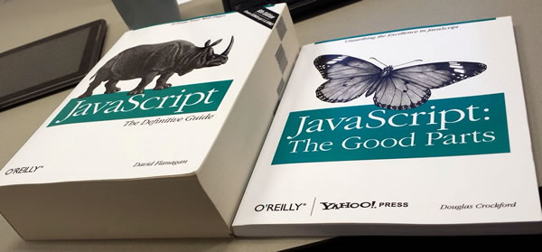
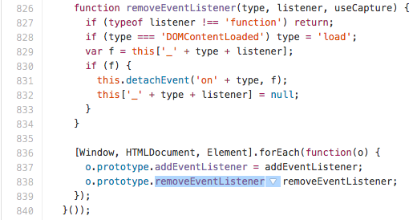
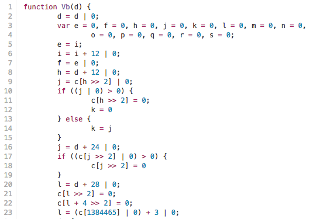
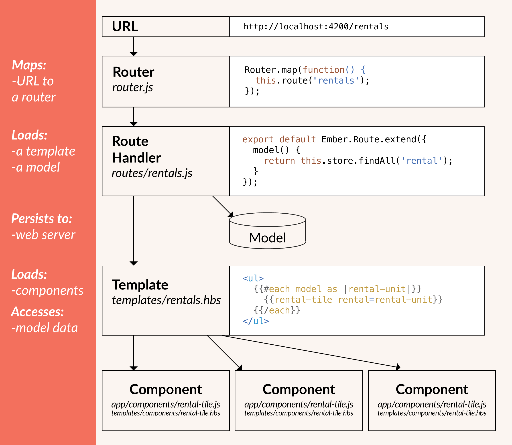

Web и DHTML
Экосистема веба
Леонид Волканин
ИМКН УрФУ

Благодарности
- Иван Комаров, Яндекс
- Александр Ильин, СКБ Контур
История развивается по спирали
- Тонкие клиенты (терминалы для мейнфреймов).
- Толстые клиенты (GUI-приложения).
- Тонкие клиенты (веб-браузеры).
- Толстые клиенты (и снова веб-браузеры).
Три кита современного веба
Javascript
- The Good
- The Bad
- The Ugly
Визуализация данных (SVG)
Кодирование видео и изображений
Работа с сетью
var conn = new WebSocket('ws://node.remysharp.com:8001');
conn.onmessage = function (event) {
var message = event.data;
if (!(/^\d+$/).test(message)) {
log.innerHTML = message;
}
}
Доступ к оборудованию
navigator.geolocation.getCurrentPosition(
function(pos) {
var lat = pos.coords.latitude;
var lon = pos.coords.longitude;
...
});
На JavaScript можно писать
- Офисные приложения (Google Docs).
- Почтовые клиенты (GMail, Я.Почта).
- Геоприложения (Google Maps, Яндекс.Карты).
- И даже серверный код (node.js).
The Bad

Ten days to implement the lexer, parser, bytecode emitter (which I folded into the parser; required some code buffering to reorder things like the for(;;) loop head parts and body), interpreter, built-in classes, and decompiler.
Чего только в JavaScript нет
- Нет модулей.
- Нет статической типизации.
- Нет областей видимости, отличных от глобальной и локальной.
- Нет совместимости между браузерами.
Иногда плохо – это хорошо
Будем использовать JavaScript в роли базового строительного блока
CoffeeScript (синтаксический сахар)
Elm (функциональщина + FRP)
Polyfills (устраняем несовместимости между браузерами)

The Ugly
Производительность оставляет желать лучшего
Выжимаем всё возможное
Но этого всё равно недостаточно
asm.js (подмножество JavaScript)

Разработчик и веб-разработчик?
Приходится использовать MVC
Много времени уходит на описание связей:
сумма = количество * стоимость
2010 — Backbone.js
каркас для создания RIA JavaScript приложений
2011 — Ember.js (одностраничность)

2014 — Knockout
- чёткое разделение доменных данных, компонентов отображения и отображаемых данных
- специализированный код, задающий отношения компонентов отображения
- aвтоматическое обновление интерфейса при изменении состояния данных модели
AngularJS
AngularJS использует комбинацию настраиваемых HTML-тегов и выражений